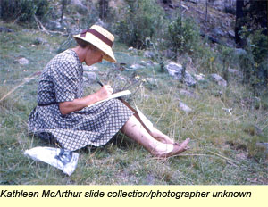

- Introducing Kathleen
In celebrating Queensland’s 150 years of statehood by ‘reflecting on our past, imagining our future’ the Wildlife Preservation Society of Queensland (WPSQ), Sunshine Coast & Hinterland Inc, found the perfect subject in Kathleen McArthur (1915–2000)––Queensland wildflower artist, author, environmental educator and conservation advocate.
To make Queensland ‘a wildflower conscious state’ was the lifelong work of this passionate and determined woman. In 1959, ‘to coincide with Queensland’s centenary’, she produced her first book Queensland wildflowers: a selection. Judith Wright, eminent Australian poet and friend of Kathleen, wrote in the Foreword:
This small book is published in the year of Queensland’s hundredth birthday. It is the first popular book intended to help us identify our wildflowers, and to show us where they may be found and at what times of the year…The book ought to show us that our own flowering plants and trees are unique and are well worth our attention and care.
Kathleen McArthur painted wildflowers to ‘bridge the gap between science and the public’. In capturing people’s imagination she changed attitudes about the environment and Australian culture. Speaking at the WPSQ Binna Burra Spring School in 1968 Kathleen expressed a heart-felt philosophy: ‘Culture as part of our daily lives must first be related to our environment, emanating from ourselves in sympathy with our land and circumstances’. It was expressed as the ‘spirit of a people’.
Drawing on this spirit Kathleen threw herself into engaging and educating Queenslanders. With Judith Wright, David Fleay and Brian Clouston she founded in 1962 the Wildlife Preservation Society of Queensland and in the following year the Caloundra Branch (now in its 46th year as WPSQ Sunshine Coast and Hinterland Inc.) With the Society’s support Kathleen wrote regular articles for local newspapers, exhibited her wildflower paintings, ran a volunteer native plant nursery at her home Midyim in Caloundra and organised public wildflower shows.
Sustaining this activity throughout the 1970s, 80s and 90s, Kathleen added talks to school students and community groups. ‘Lunch Hour Theatre’ presentations entertained while delivering a strong message about the value of history in informing the present. More books were published, including seasonal approaches to wildflowering illustrated with her paintings, and a well-researched social and natural history of the Pumicestone Passage published to persuade governments to preserve a precious resource. Much of Kathleen McArthur’s work and experiences are recorded in her 1989 Living on the Coast.
Outstanding among Kathleen McArthur’s achievements is her contribution to conservation campaigns on the Sunshine Coast. No matter how daunting the task, Kathleen drew upon a great inner strength and a resolve to speak out for the environment. Her rapid grasp of the relevant science and a capacity to convey ideas in many ways allowed her to energise the community to fight for the protection of places that would have been swallowed up in sandmining, grazing and housing development. The intactness of Cooloola, the Pumicestone Passage and the Coast’s beaches are testament to her skills. At 68 years of age she commented on her earlier driving passion: ‘I am calmer now…[b]ut emotionalism is very necessary to give people the drive to act. I have always tried to play it low key because when you become a name, people are more interested in you than your message’.
In recognition of Kathleen McArthur’s outstanding service to community education, James Cook University of North Queensland conferred on her in December 1996 the Degree of Honorary Doctor of Educational Studies. In June 2002 Sunshine Coast Daily readers voted Kathleen McArthur ‘Citizen of the Century’ to honour her dedication to the environment.
Rapid development of the Sunshine Coast continues to pressure wildflower habitat leading to further loss of community knowledge about this dwindling natural resource. Diminishing too is knowledge of Kathleen McArthur’s role in preserving what we can still enjoy. Kathleen McArthur’s books are now out of print and can only be found in libraries. While her photographs, papers, unpublished writings and collected newspaper articles are held by the Wildlife Preservation Society of Queensland, her paintings by her family, scripts and other material by Sunshine Coast Libraries and state and national libraries, this rich resource is not generally accessible. Now, with the aid of a generous Q150 grant and kind assistance from Hugh McArthur, the Sunshine Coast Newspaper Company, Sunshine Coast Libraries and others, WPSQ Sunshine Coast & Hinterland Inc invites you to sample Kathleen McArthur’s creative brilliance and fighting spirit in a selection of her paintings, writings and photographs.
© WPSQ, Sunshine Coast & Hinterland Inc